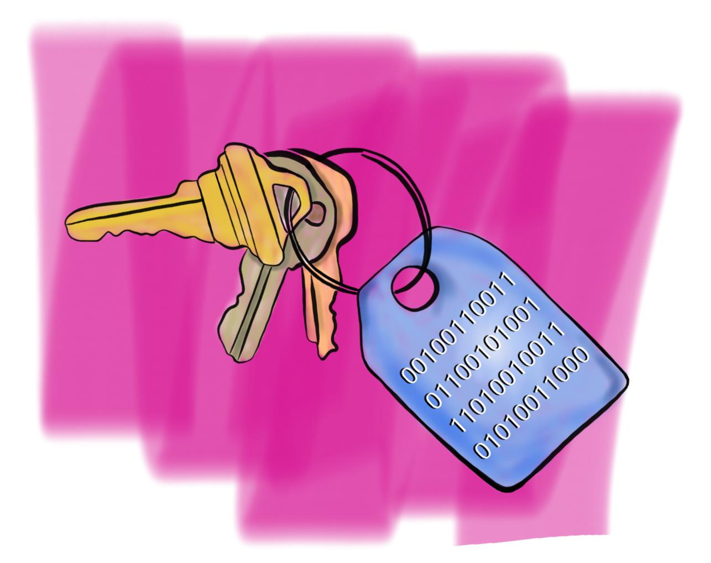

What's on Your Keychain?
October 24, 2015
My kids think I'm obsessive about my keys. Sometimes riding bikes, my kids will see me pat my rear pocket periodically to make sure my keys are still there. "Pops, your keys are fine." I dropped them down an elevator shaft one time, so allow me some leeway. Anyway, I have a few keys, not a ton, like a janitor or a roadie for a rockband. To those guys, keys are life. The little gold one opens the bus, the medium bronze one opens the mic cabinet, the big silver one is for the beer locker. I'm just speculating what a rock band needs to lock up. So when someone yells, "Hey, Jessie, open up the tour bus," then Jesse's hand swings instinctively to the pocket where his keys are and grabs 'em. Whenever he grabs for his keys, he knows where they are, and what they do: they open stuff.
Wallets are another thing most guys can be a little obsessive about. You don't want to lose that, cause there goes all the money and credit cards for buying beer at the concert. For me, the wallet's on the left, keys on the right. Always. Wallet left, keys right. When I grab my keys, I'm opening stuff. When I grab my wallet ... I could be doing a number of different things. Maybe I need to check a receipt, or pay for something, or check out a library book or find a phone number on a slip of paper. If everything on a keyring does the same thing, then most of the stuff in my wallet does something different.
In programming, we love to collect stuff. Sometimes on a keyring, where everthing is the same. And sometimes it's in a wallet where everything is a little different.
The programmer's keyring is called an array. It holds words, numbers, most objects that Ruby recognizes. In many cases, it's best practice to hold just one kind of thing in an array, either numbers or words. And only things that are related for some reason. So like, an array of numbers you came across on Tuesday is silly. But an array of invoice amounts that you sent to the boss makes more sense. With an array, we can call on the whole keyring when we want, or just an individual key on the ring. Each element in the array gets a number, like first, second or third, and we use that to access each element. keyring[1] is for my bike, keyring[2] for the house, ...
Arrays
keyring = ["silver", "gold", "bronze", "light-gray", "dark-gray", "white"]
keyring[1] ==> "gold"
keyring[4] ==> "dark-gray"
keyring[-1] ==> "white"
house(keyring[2]) ==> call a method to unlock the house
As in life, not all of our data will fit into neat little packages, so we turn to our hash-wallet to store all that different stuff. It stores data in one list, like an array does. But instead of giving each item a sequential number, we can give each of those little data bits a unique name. So library_card is my card number; drivers_license is my license number; business_card is the name on the card I got last night. I don't have to remember what order those things have, like first, second or third. I can just say wallet[:library_card] and get that card number to check out my book.
Hashes
my_wallet = { "credit_card" => 1234, "library_card" => 4321, "random_phone_no" => 411}
can me more readable as:
my_wallet = {
"credit_card" => 1234,
"library_card" => 4321,
"random_phone_no" => 411
}
my_wallet[:drivers_license] = 99844
==> add a new key/value pair
puts my_wallet[:favorite_quotation_note]
==> "Show 'em you're a tiger."